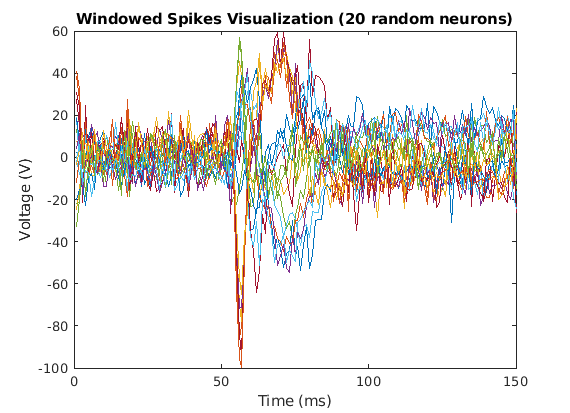
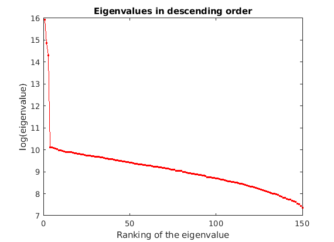
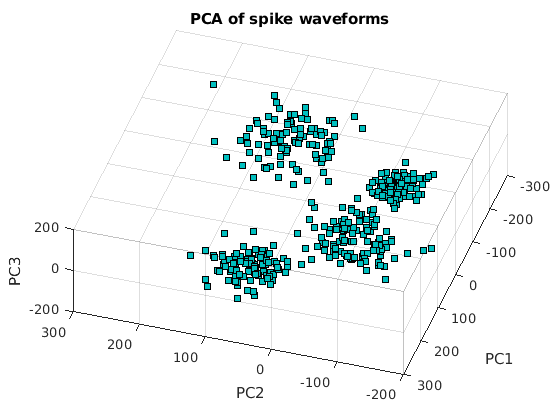

Contents
clear; clc; close all;
a)
load('windowedSpikes.mat')
figure(1);
plot(data')
xlabel('Time (ms)')
ylabel('Voltage (V)')
title('Windowed Spikes Visualization')
figure(2);
plot(data(randi([1, size(data, 1)], 20, 1), :)')
xlabel('Time (ms)')
ylabel('Voltage (V)')
title('Windowed Spikes Visualization (20 random neurons)')

mean_data = mean(data, 1);
centered_data = data - ones(size(data, 1), 1) * mean_data;
C = centered_data'*centered_data;
[V, D] = eig(C);
[d,ind] = sort(diag(D), 'descend');
D = D(ind,ind);
V = V(:,ind);
figure(3);
plot(log(d), 'r-o', 'MarkerSize', 2)
xlabel('Ranking of the eigenvalue')
ylabel('log(eigenvalue)')
title('Eigenvalues in descending order')

PC1 =V(:,1);
PC2 = V(:,2);
projPC1 = centered_data * PC1;
projPC2 = centered_data * PC2;
figure(4);
scatter(projPC1, projPC2, 'r', 'filled')
xlabel('PC1')
ylabel('PC2')
title('PCA of spike waveforms')
PC3 = V(:, 3);
projPC3 = centered_data * PC3;
figure(5);
scatter3(projPC1, projPC2, projPC3, 'r', 'filled')
xlabel('PC1')
ylabel('PC2')
zlabel('PC3')
title('PCA of spike waveforms')
